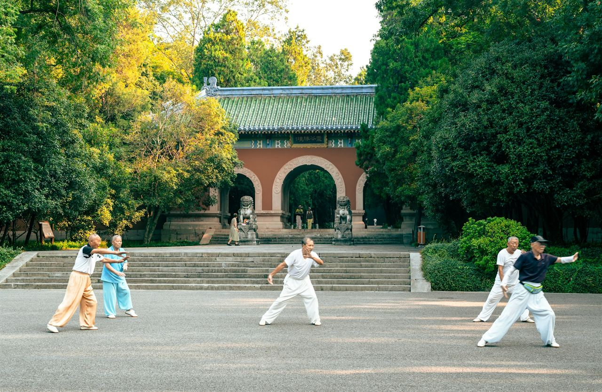
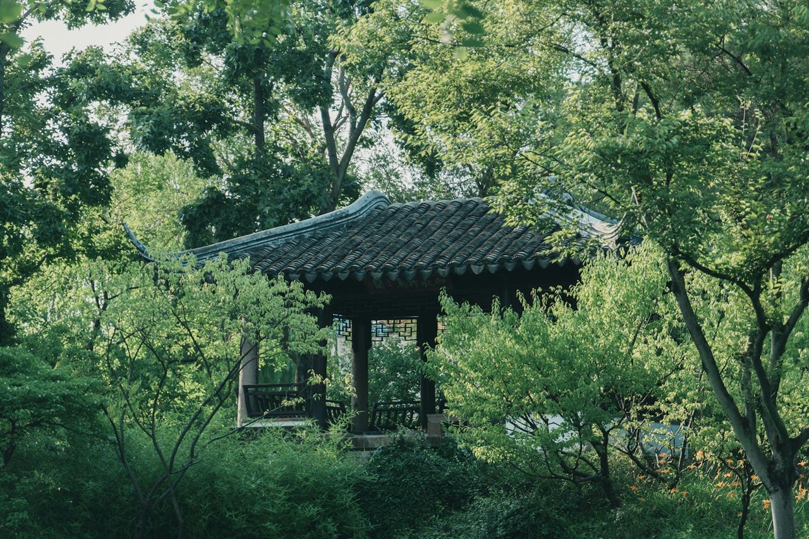

The night before
9:00 pm
The last meal, then water only.
Fasting starts the evening before, usually around nine; the hospital sets the exact time. Put your passport by the door. You will need it in the morning.
Destinations · Shanghai, China
Brisk, efficient and very well priced, inside the quiet wing of a big city hospital. This is a typical morning, hour by hour, and the garden city half an hour away.
Right now in Shanghai
–
Sunrise – · Sunset –
Lujiazui at dawn · Photo: Freeman Zhou
From $377
Basic comprehensive checkup, Tongji Hospital international department. Booking-platform listing, 2026.
13–16 h
Nonstop from several major US hubs; from others, one connection.
Level 2
US travel advisory: exercise increased caution. Read it before you decide; we will go through it with you.
Visa
Needed for a round trip. Or 240-hour visa-free transit, flying on to a third country.
Read the international departments guideThe word
体检
tǐjiǎn · a body examination
Two characters: body, and inspect. In China a yearly tijian is a common workplace benefit, and whole chains of checkup centers exist to provide it. Visitors usually go instead to a hospital’s international department: its own entrance, English-speaking staff, appointments, and prices that are higher than locals pay and still far below American ones.
Hour by hour
Times are typical of a hospital international department in central Shanghai. Yours will be set by the hospital; ask it to confirm them in writing before you fly.
The night before
9:00 pm
Fasting starts the evening before, usually around nine; the hospital sets the exact time. Put your passport by the door. You will need it in the morning.
Checkup day
6:30 am
Shanghai’s mornings belong to its older residents. In Fuxing Park there is tai chi under the plane trees, ballroom dancing, someone practicing the erhu, and a man walking backwards for his health. Join in, or just watch.

Checkup day
7:30 am
At the international department your passport is your patient ID. You register with it and pay the way that hospital prefers (ask beforehand), then change into a gown and meet your coordinator.
Checkup day
8–11 am
Blood and urine, ultrasound, ECG, a chest scan, and an endoscopy if you chose one. Outside, the main outpatient halls are among the busiest anywhere. In here it is calm, and someone walks you to every room.
Checkup day
11:30 am
A doctor goes over what is ready the same day. Before you book, we make sure the final report will be in English and that your scan files come with it.
Checkup day, 12:15 pm
小笼包xiǎolóngbāo, soup dumplings
Born in Nanxiang, on Shanghai’s edge. Bite a small hole, sip the broth, then eat the rest; they arrive very hot.
If your stomach wants something gentler first, a bowl of plain congee, bái zhōu, is never far away.
Checkup day
Afternoon
The old French Concession is made for slow walking: Wukang Road, Hengshan Road, and behind them lanes of shikumen, the stone-gated row houses that are Shanghai’s own. Stop for tea. It comes hot, always.
If you want one thing to bring home, make it a tin of Longjing green tea. Or a good thermos: by day three, you will understand the thermos.
Good to know
Your phone is your wallet.
Alipay and WeChat Pay now accept foreign cards. Set one up before you fly; cash works, but few people use it.
Many apps don’t work.
Google, Gmail, WhatsApp and most Western social media are blocked on local networks. A roaming plan or travel eSIM from home usually gets around it.
Your passport, everywhere.
Hotels, hospitals and high-speed trains all ask for it. Keep it with you.
Hot water, not ice.
Restaurants pour hot water or tea. An old belief holds that cold drinks upset digestion; ask for ice if you want it.
Ride-hailing in English.
DiDi has an English version and takes foreign cards, directly or through Alipay. Keep your hotel’s address in Chinese to show the driver.
No tipping.
It isn’t expected in restaurants or taxis. A thank-you is enough.
Say it once
The international department speaks English; the noodle shop next door may not. Tones are hard, so smile and point as well.
你好
nǐ hǎo
Hello
谢谢
xièxie
Thank you
我没事
wǒ méi shì
I’m fine, it’s nothing
洗手间在哪里？
xǐshǒujiān zài nǎlǐ?
Where is the restroom?

The day after
About thirty minutes by high-speed train, Suzhou’s classical gardens arrange rock, water and pavilions so that each turn of the path frames a new painting. Several are UNESCO World Heritage sites. Go early, before the tour groups arrive.
A Shanghai breakfast
The “four heavenly kings”: sesame flatbread, fried dough, soy milk and sticky rice rolls.
Yu Garden at opening time
The old city’s garden, before the crowds.
The Bund after dark
Old banks on one side of the river, Pudong’s towers lit up on the other.
Suggestions only. We don’t sell tours, and we earn nothing from them.
Tell us when you can travel and what you want from a checkup. We will write back personally.
Plan a checkupPudong from the Bund · Video: Maciej Głowiński